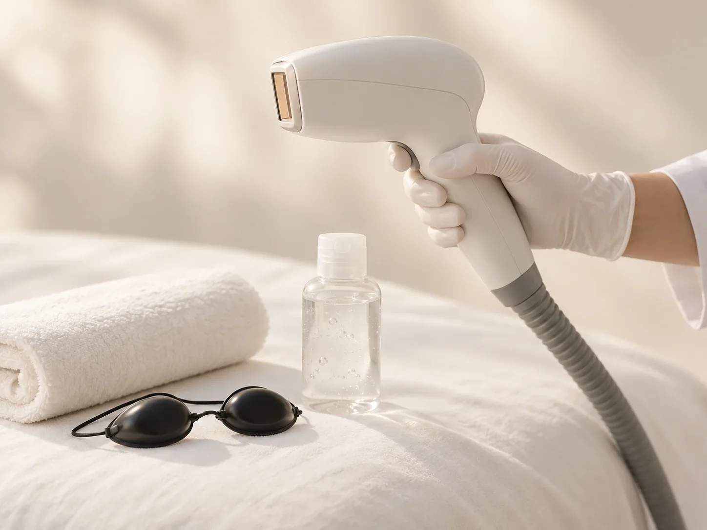
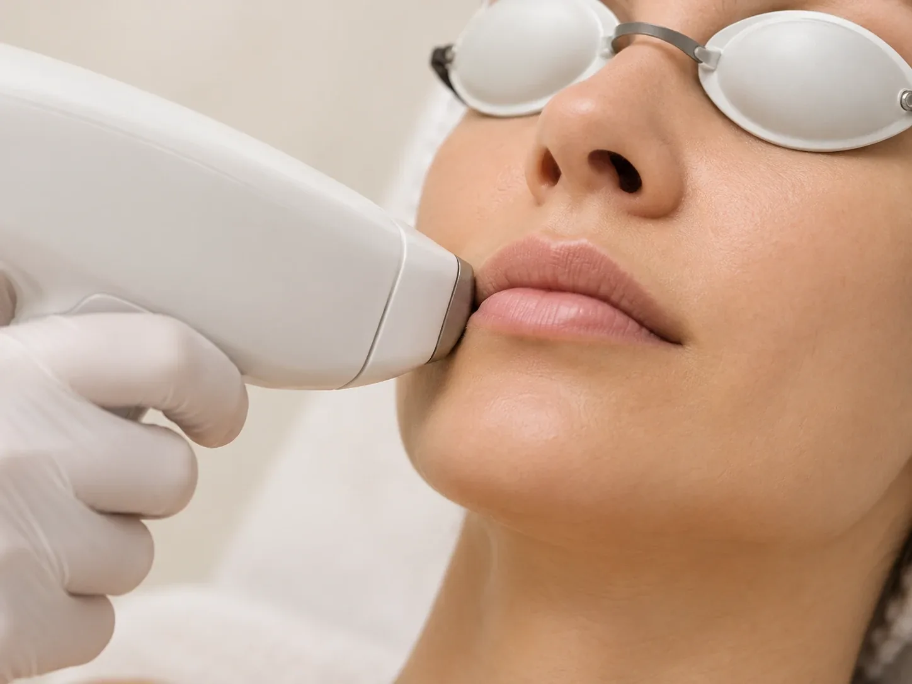

Кожа и внешность
Лазерная эпиляция
Гладкая кожа без ежедневного бритья: курс процедур по зонам.
Лазерная эпиляция на аппарате Magic One для женщин и мужчин. Параметры подбирают под тип кожи и волос, число процедур и интервалы определяет специалист.
- Стоимость
- от 400 ₽
- Зоны
- лицо, руки, ноги, бикини, тело, комплексы и абонементы

Кому подходит
Лазерная эпиляция удаляет волосы лазером: энергия света нагревает волосяную луковицу, и волос перестаёт расти. Эпиляция лазером в клинике 8.0.8 в Москве, у метро «Римская»: записаться можно ежедневно с 9:00 до 21:00.
Лазерная эпиляция подходит тем, кто хочет гладкую кожу без ежедневного бритья, раздражения и вросших волос. Курс процедур снижает плотность роста волос.
Перед курсом специалист уточнит запрос, состояние здоровья и противопоказания, подберёт параметры под фототип и расскажет, сколько процедур понадобится.
Эпиляцию делают на диодном лазере Magic One. Лазерная эпиляция для женщин и для мужчин: мужчинам доступны все зоны.
Лазер действует на пигмент волоса, поэтому сильнее всего действует на тёмные волосы. Светлые, рыжие и седые волосы он почти не видит: это стоит обсудить до начала курса.
Зоны и цены
- Лазерная эпиляция лица Верхняя губа, подбородок, щёки, височно-скуловая область или лицо полностью. Подбородок, щёки и височно-скуловая область стоят по 900 ₽.
- Подмышки Вместе с бикини выгоднее в комплексе.
- Бикини и глубокое бикини Бикини классическое или глубокое бикини вместе с межъягодичной областью. В классическом обрабатывается кожа в пределах 2–3 см от линии белья, за большую площадь доплата от 500 ₽. Межъягодичная область отдельно стоит 1 200 ₽.
- Руки До локтя 1 200 ₽, руки полностью 1 900 ₽.
- Ноги Ноги полностью или отдельные зоны: голени с коленями 1 500 ₽, внутренняя часть бедра 1 100 ₽, бёдра полностью 2 000 ₽, подъём ног 500 ₽, пальцы ног 400 ₽.
- Живот, спина, ягодицыБелая линия живота 900 ₽, живот 1 500 ₽, грудная клетка 1 500 ₽, поясница 1 100 ₽, ягодицы 2 000 ₽, спина 2 300 ₽.
- Шея и лопаткиПередняя или задняя поверхность шеи по 900 ₽, верхняя область лопаток 1 100 ₽, ареолы 900 ₽.
- Комплексы Бикини классика и подмышки (XS), глубокое бикини и подмышки (S), плюс голени (M), глубокое бикини и ноги полностью (SM), плюс подмышки (L), плюс руки полностью (XL). Например, комплекс M стоит 4 500 ₽, цены остальных – на странице «Все цены».
- Всё телоКомплекс TOTAL «С головы до ног», около 3 часов.
- Абонементы на 3 и 5 процедурНапример, комплекс XS: 3 процедуры за 6 750 ₽, 5 процедур за 10 600 ₽. Остальные абонементы – на странице «Все цены».
Противопоказания
- Беременность и кормление грудьюОбщепринятое противопоказание: курс переносят.
- Свежий загарЗагар на зоне, в том числе автозагар, повышает риск ожога и пигментных пятен.
- Воспаление и повреждения кожиРанки, высыпания, обострение дерматита, герпес в зоне обработки.
- Родинки и новообразования в зонеИх обходят или сначала показывают врачу.
- Острая инфекция, температураПроцедуру переносят до выздоровления.
- Хронические заболеванияОбострение хронических болезней, декомпенсированный сахарный диабет, онкологические заболевания.
- СветочувствительностьНекоторые антибиотики, ретиноиды и другие препараты повышают чувствительность кожи к свету: о них нужно сказать заранее.
- Полный списокПротивопоказания уточнит специалист на консультации и при необходимости порекомендует консультацию врача.
Процедуры

Лазерная эпиляция бикиниКлассическое и глубокое бикини, комплексы с подмышками и ногами. Число процедур и интервал между ними определяет специалист.Классическое 1 600 ₽
Лазерная эпиляция лицаВерхняя губа, подбородок, щёки, височно-скуловая область или лицо полностью.Лицо полностью 1 800 ₽ Лазерная эпиляция подмышекПодмышечные впадины за одну короткую процедуру; вместе с бикини выгоднее в комплексе.Зона 1 100 ₽
Лазерная эпиляция подмышекПодмышечные впадины за одну короткую процедуру; вместе с бикини выгоднее в комплексе.Зона 1 100 ₽ Лазерная эпиляция ног и рукГолени, бёдра, ноги полностью, руки до локтя или полностью, пальцы и подъём стопы.Ноги полностью 3 300 ₽
Лазерная эпиляция ног и рукГолени, бёдра, ноги полностью, руки до локтя или полностью, пальцы и подъём стопы.Ноги полностью 3 300 ₽ Комплексы лазерной эпиляцииНесколько зон за один визит выгоднее, чем по отдельности: от бикини с подмышками до всего тела.Комплекс 2 500 ₽
Комплексы лазерной эпиляцииНесколько зон за один визит выгоднее, чем по отдельности: от бикини с подмышками до всего тела.Комплекс 2 500 ₽
Как проходит лазерная эпиляция
- КонсультацияЗапрос, состояние здоровья, противопоказания.
- Подбор параметровПод фототип кожи и тип волос.
- ПроцедураОбработка выбранных зон с охлаждением кожи. Одна зона занимает от 10 до 60 минут, всё тело около 3 часов.
- План курсаЧисло процедур и интервалы между ними.
Как подготовиться к процедуре
- Побрейте зонуЗа 1–2 дня до процедуры побрейте зону бритвой. Воск, шугаринг и эпилятор не используйте за 2–4 недели: лазеру нужен волос в фолликуле.
- Без загараЗа 2 недели до процедуры не загорайте и не пользуйтесь автозагаром.
- Без пилинговНе делайте пилинги и скрабы в зоне эпиляции за неделю до процедуры.
- Чистая кожаВ день процедуры не наносите на зону крем, масло, дезодорант и косметику.
- ЛекарстваСкажите специалисту, какие лекарства принимаете, особенно антибиотики и препараты с ретиноидами.
После консультации
После приёма вы будете понимать:
- сколько процедур понадобится для выбранных зон
- с каким интервалом приходить
- как ухаживать за кожей между процедурами
Сколько процедур нужно и почему
Волосы растут циклами. Лазер действует на волосы в активной фазе роста, а в каждый момент таких волос только часть. Остальные «спят» и появятся позже. Поэтому одной процедуры недостаточно: нужен курс.
Обычно курс лазерной эпиляции включает от 5 до 10 процедур. Число зависит от зоны, цвета и толщины волос, фототипа кожи и гормонального фона. На лице волосы растут быстрее, поэтому интервалы короче, на ногах и теле длиннее.
После каждой процедуры волос становится меньше, оставшиеся растут тоньше и светлее. Со временем может понадобиться поддерживающая процедура: как долго держится результат, зависит от гормонального фона и особенностей организма.
Курс удобно оформить абонементом на 3 или 5 процедур: это выгоднее, чем платить за каждую процедуру отдельно.
Уход после лазерной эпиляции
- ПокраснениеЛёгкое покраснение и отёчность вокруг волос бывают и обычно проходят за несколько часов.
- Без тепла 2–3 дняБаню, сауну, горячую ванну, бассейн и интенсивные тренировки отложите на 2–3 дня.
- Защита от солнцаДве недели не загорайте, на открытые зоны наносите крем с SPF 50.
- Не травмируйте кожуСкрабы и пилинги отложите на неделю. Волосы, которые выпадают в первые недели, не выщипывайте, их можно брить.
- Если что-то беспокоитЕсли появились пузыри, сильное жжение, корочки или пятна, позвоните в клинику.
Можно ли делать лазерную эпиляцию летом и с загаром
Летом лазерную эпиляцию делать можно, если на зоне нет свежего загара и вы готовы беречь её от солнца до и после процедуры. Зоны под одеждой, например бикини или подмышки, защитить проще, чем ноги, руки и лицо.
Загорелая кожа поглощает больше энергии лазера, поэтому выше риск ожога и пигментных пятен. Если кожа загорела, процедуру обычно переносят. Как быть с загаром и сколько ждать, специалист скажет на консультации.
Удобнее начинать курс осенью или зимой: к лету большая часть процедур будет позади. Если собираетесь в отпуск к морю, обсудите график процедур заранее.
Стоимость
К стоимости мужской эпиляции прибавляется 20%. Все зоны, комплексы и абонементы на странице «Все цены».
Все ценыВопросы
Сколько стоит лазерная эпиляция?
Отдельные зоны стоят от 400 ₽, подмышки 1 100 ₽, бикини классическое 1 600 ₽, глубокое бикини 2 300 ₽, ноги полностью 3 300 ₽, всё тело 9 900 ₽. Комплексы и абонементы на 3 и 5 процедур выгоднее.
Сколько стоит лазерная эпиляция глубокого бикини и подмышек?
Вместе в комплексе S: 3 100 ₽ за процедуру. Абонемент на 3 процедуры стоит 8 100 ₽, на 5 процедур 11 350 ₽.
Как записаться на лазерную эпиляцию?
По телефону +7 (995) 656-33-96, ежедневно с 9:00 до 21:00.
Какой лазер в клинике?
Диодный лазер Magic One. Параметры специалист подбирает под фототип кожи и тип волос.
Делаете ли лазерную эпиляцию мужчинам?
Да, мужчинам доступны все зоны: лицо, шея, грудь, живот, спина, руки, ноги, подмышки и другие.
Сколько процедур нужно?
Обычно нужен курс: волосы растут циклами. Точное число процедур специалист назовёт после консультации.
Через какой интервал повторять процедуру?
Зависит от зоны и того, как быстро растут волосы: на лице интервалы короче, на ногах и теле длиннее. График специалист составит после первой процедуры.
Больно ли делать лазерную эпиляцию?
Ощущения зависят от зоны и чувствительности кожи, чаще это тепло и покалывание. Кожу во время процедуры охлаждают. Если нужна анестезия, её стоимость оплачивается отдельно.
Нужно ли брить зону перед процедурой?
Да, за 1–2 дня, бритвой. Воск, шугаринг и эпилятор нельзя использовать за 2–4 недели до процедуры.
Можно ли делать лазерную эпиляцию летом?
Можно, если на зоне нет свежего загара. Перед процедурой и после неё нельзя загорать. Как быть с загаром, специалист скажет на консультации.
Есть ли противопоказания?
Да. Перед курсом специалист проверит противопоказания и при необходимости порекомендует консультацию врача.
Где сделать лазерную эпиляцию рядом с метро «Римская»?
Москва, ул. Сергия Радонежского, 15–17, стр. 2, этаж 1. Рядом станции метро «Римская» и «Площадь Ильича».
Как добраться
- АдресМосква, ул. Сергия Радонежского, 15–17, стр. 2, этаж 1
- Метро«Римская» и «Площадь Ильича»
- Часы работыЕжедневно с 9:00 до 21:00
- Телефон+7 (995) 656-33-96


Имеются противопоказания. Необходима консультация специалиста.